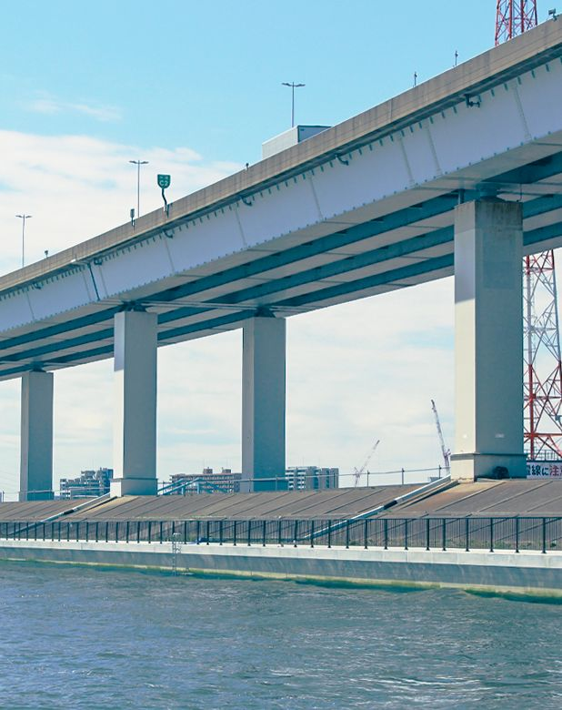
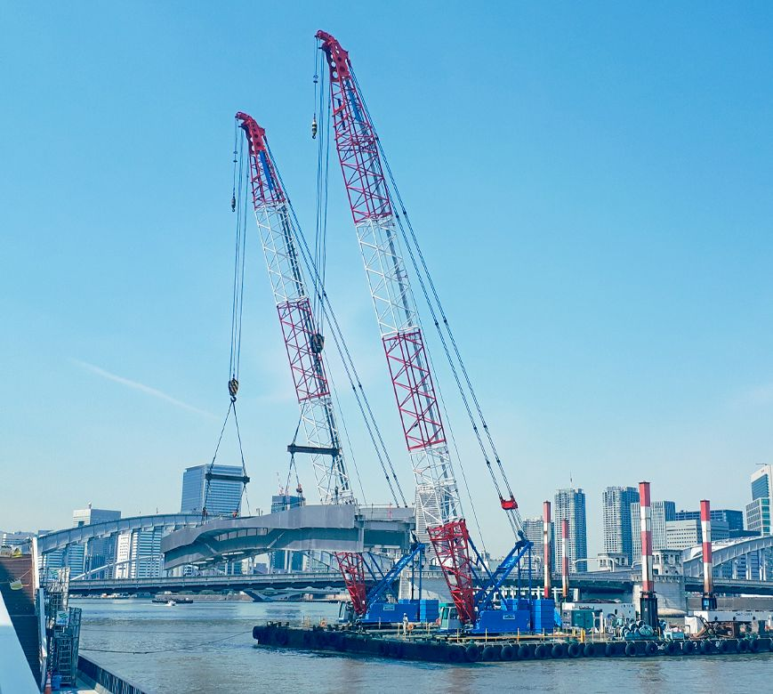
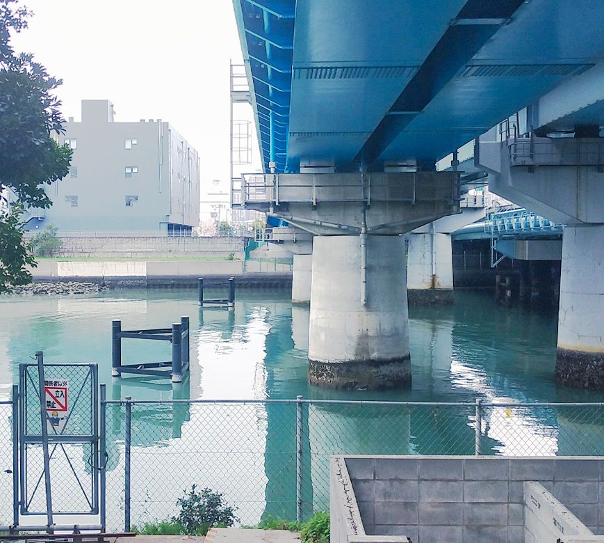
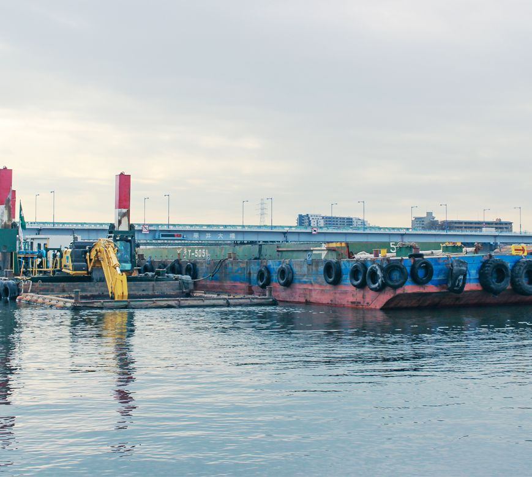
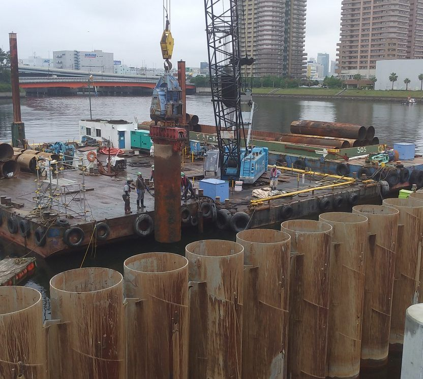

ABOUT GOKYO
五菱産業株式会社とは
当社では官公庁様、民間事業者様問わず専門工事全般をお引き受けいたしております。豊かな環境づくりに関する相談所として、地域に根差した活動を通し、社会貢献に努めております。
事業内容
当社では官公庁様、民間事業者様問わず専門工事全般をお引き受けいたしております。
豊かな環境づくりに関する相談所として、地域に根差した活動を通し、社会貢献に努めております。
工事内容一覧

道路工事
社会の基盤となる道路は、安全で安心であることが何よりも大切です。
私たちは、快適な交通環境の整備や交通事故の防止を目的に、専門技術と資格を持つスタッフが案内標識・規制標識の設置をはじめ、区画線や横断歩道などの道路標示工事を行っています。
確かな技術で「見やすく・安全な道路づくり」に貢献し、地域の皆さまが安心して通行できる環境を支えています。
- 調査工：深浅測量、磁気探査、底質調査、ボーリング工など
- 浚渫工：バックホウ船、クレーン台船による構造物の基礎築造の
土砂掘削 - 基礎工：鋼矢板、鋼管矢板のクレーン台船、バイブロハンマーを
使用しての打設 - 基礎工：鋼矢板、鋼管矢板の圧入機での圧入
- 地盤改良工：高圧噴射撹拌工、改良架台の設置、深層混合処理工
など

防護工事
歩行者の安全を守るため、ガードレールや街路柵の設置工事を行っています。また、交通事故などで損傷した箇所の修繕・メンテナンスにも迅速に対応し、安全な道路環境の維持に努めています。
さらに、車の走行音などによる生活環境への影響を軽減するため、
遮音壁・防音壁の設置工事も手がけています。
- 橋の架け替え工事に伴う迂回路：仮設桟橋工事
- 橋梁下部工事：橋の橋脚、橋台部の構築工事
- 橋梁上部工事：鋼桁など橋の上部の架設工事

公共工事
地域の方々が日常的に使う公園の、バーゴラ（日陰棚・つる棚など）案内板、時計塔の施工を行っています。また、安心に使って頂く遊具やスポーツ施設・設備も施工しております。皆さんが快適に過ごせる環境づくりを心掛けています。
- RC巻き立て工：橋脚、橋台部の耐震補強工事（鉄筋、型枠、コン
クリート工） - 仮締切工：橋脚の耐震補強工事のための仮締切（鋼製パネル）の
設置工事

野外工事
民間のお仕事も承っております。店舗の外観デザインや内部のフロアデザインなど、お客様のイメージを当社が持つ高い技術で実現いたします。また、屋外広告なども承っております。
- バックホウ浚渫工事：河川の航路幅、水深の確保
- グラブ浚渫工事：河川の航路確保、水深の確保
- ポンプ浚渫工事：上記のような機械施工が難しい狭い場所や、現
場まで航行船の航行に制限のある場所は、潜水士や専用のポンプ
を使用して施工

基礎工事
土砂崩れを防止する山留工事、鋼矢板や鋼管矢板を地中に打ち込み、海から
の潮や波を防ぐ矢板護岸をおこないます。
- 鋼管杭、鋼管矢板の打設、圧入工事
- 桟橋基礎杭（H鋼杭、鋼管杭）の打設工事
- 防衝杭の打設工事
表彰実績
横にスクロールできます→
| 表彰機関 | 対象業務名 | 表彰名 | 表彰年月 |
|---|---|---|---|
| 東京港建設事務所 | 平成二十六年度新海面処分場 Dブロック深堀工事（その3） |
工事安全優秀賞 | 平成27年4月22日 |
| 若築建設株式会社 東京支店 |
株式会社どき | 優秀事業者賞 | 平成29年6月7日 |
| 株式会社大林組東京本店 | 高速1号羽田線 （東品川桟橋・鮫洲埋立部） 更新工事 |
優良協力会社表彰 | 令和元年8月 |
| 岩田地崎建設株式会社 東京支店 |
株式会社どき | 表彰状 | 令和4年6月17日 |
| 東京都港湾局 | 令和二年度辰巳排水機場 （再整備） 建設工事（その2） |
優良協力企業局長表彰 | 令和4年7月8日 |
| 国土交通省 関東整備局 荒川下流河川事務所 |
R2荒川中堤北葛西二町目地区 護岸改築工事 |
優良下請企業所長表彰 | 令和4年7月22日 |
| 松井建設株式会社 | 呑川新橋下部工事(3二－放17呑川新橋） | 優良職長賞 | 令和5年5月9日 |
| 東京都港湾局 | 令和三年度品川内貿ふ頭岸壁(-8.5m)改良整備工事 | 賞状 | 令和5年8月4日 |